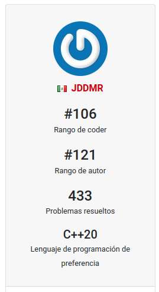
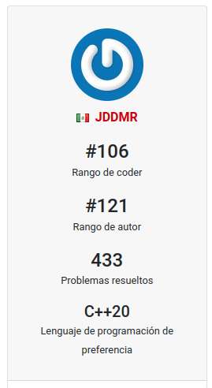

La gran mayoria de mis pasatiempos tienen que ver con la tecnologia, mas especificamente en el area de TI.

Uno de mis pasatiempos preferidos es programar, desde la preparatoria estoy programando, especificamente empece con programacion competitiva, ademas de que estuve participando en multiples olimpiadas de informatica, esto nunca lo tome como una obligacion, ya que amo programar, y todo lo nuevo que aprendo lo quiero implementar.
 

Ademas, amo resolver los problemas que se presentan en estas olimpiadas, esto debido a que requieren de un razonamiento logico y matematico, y requiere una comprension total del problema, por lo que es un gran ejercicio mental, mi problema favorito es el de la fabrica de panquecitos.

Otro de mis pasatiempos preferidos es linux, adoro modificarlo hasta lo absurdo para que se vea increible, ademas de que puedo aprender sobre sistemas operativos mientras lo hago.

Mientras programo me encnta escuchar musica, disfruto mucho de escuchar musica tipo lo-fi, asi trap y rap argentino, uso youtube music ya que tiene un mejor algoritmo de spotify, mi cancion favorita por ahora es la sesion de Milo J y bizarrap.


Por ultimo, amo leer y jugar futbol, en veracruz tenia un equipo para competir en la liga del pueblo, ademas de que tengo mas de 20 libros de los cuales lei todos.

Ultimamente retome el entrenar Tae-Kwon-Do, hasta llegar al intra del semestre pasado.